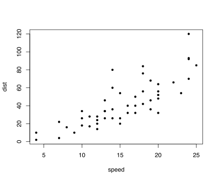

Now trying RMarkdown in Clement. I should still have MathJax (\(\sigma\)). I’m just not sure why some of the css is overridden when I do blogdown::serve_site() instead of hugo serve -D.
Nope, I was wrong: Blogdown follows my css exactly. OK, now let’s try some in-line R: 2.
And now let’s try an R block:

So, I can just start a new post with the New Post add-in in RStudio and just check the R Markdown (.Rmd) radio button and I’m good to go. It’s going to be R Markdown instead of Markdown, and it will render plain html just as well as Markdown would. The advantage is that I am in familiar territory, with in-line R and R code block working as they do in R notebooks. The cost is that there’s a small speed penalty over plain Markdown. That’s fine.